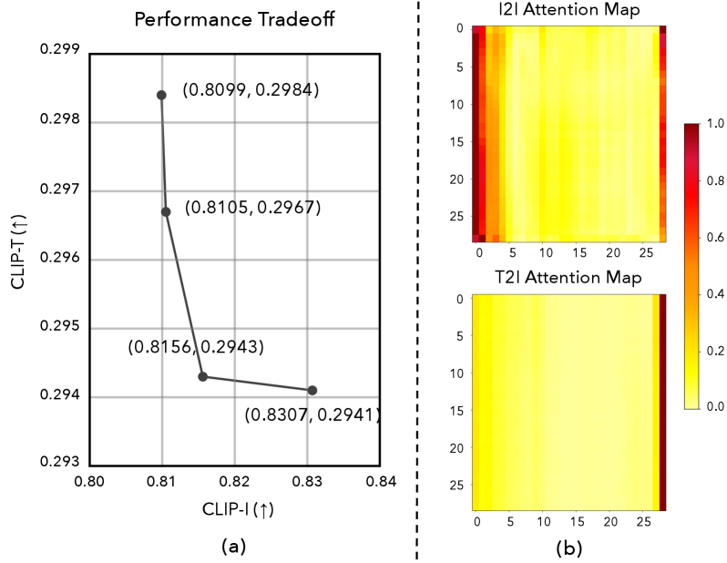
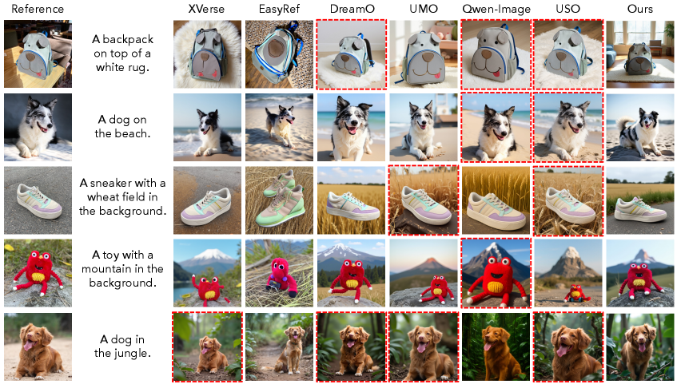

This paper proposes a framework that conditions diffusion models on MLLMs with VAE-based identity conditioning to jointly improve multimodal understanding and identity preservation in subject-driven image generation.
本文提出了一种将多模态大语言模型（MLLM）与扩散模型相结合的新框架，通过联合编码文本和参考图像来提升主体驱动图像生成中的身份保持和指令跟随能力。其核心创新包括双层级聚合（DLA）模块和多阶段去噪策略，有效平衡了语义理解与细粒度身份信息。实验结果表明，该方法在多项指标上显著优于现有方法。
Deep Note — squeeze-mllm-subject
Key Takeaways - Jointly encoding text and reference images via MLLM improves multimodal reasoning and reduces copy-paste artifacts. - Dual Layer Aggregation (DLA) aggregates features from all MLLM layers to better condition diffusion models. - Multi-stage denoising balances semantic guidance from MLLM and fine-grained identity from VAE. - Two-stage training first enables MLLM conditioning, then adds VAE identity enhancement to avoid embedding conflicts. - Outperforms prior methods in both identity preservation and instruction following on subject-driven generation.
0) Metadata
- Title: Squeezing Capacity from Multimodal Large Language Models for Subject-driven Generation
- Alias: squeeze-mllm-subject
- Authors: Shuhong Zheng, Aashish Kumar Misraa, Yu-Teng Li, Yu-Jhe Li, Igor Gilitschenski
- arXiv ID: 2605.26111
- Published:
- Links:
- Abs: https://arxiv.org/abs/2605.26111
- HTML: https://arxiv.org/html/2605.26111v1
- PDF: https://arxiv.org/pdf/2605.26111
- Tags: subject-driven-generation, multimodal-llm, diffusion-transformer, identity-preservation, dual-layer-aggregation
- Domains: system_safety
- Rating: 4/5 (base 1 + quality 2 + observation 1)
1) Why-read
This paper proposes a framework that conditions diffusion models on MLLMs with VAE-based identity conditioning to jointly improve multimodal understanding and identity preservation in subject-driven image generation.
2) CRGP
C — Context
Subject-driven image generation aims to synthesize images preserving a subject's identity while following text instructions. Early methods like DreamBooth require per-subject fine-tuning, while later zero-shot approaches (e.g., IP-Adapter, UNO) encode text and reference images separately, limiting cross-modal reasoning and causing copy-paste artifacts. Recent works connect MLLMs to diffusion decoders for better instruction following but often neglect fine-grained identity cues.
R — Related work
- DreamBooth and Textual Inversion: per-subject fine-tuning for identity fidelity.
- IP-Adapter and BLIP-Diffusion: reference-image conditioning without retraining.
- UNO, UMO, USO: zero-shot subject generation via VAE-based token conditioning.
- DreamEngine, Qwen-Image, EasyRef: integrate MLLMs into diffusion decoders for multimodal instruction following.
- Diffusion Transformers (DiT): transformer-based backbone for diffusion models.
G — Gap
Existing subject-driven generation methods either encode text and images separately (causing copy-paste artifacts) or use MLLMs only for instruction following while neglecting identity preservation. No prior work jointly encodes both modalities in a shared MLLM space and augments it with VAE-based identity conditioning to balance semantic reasoning and fine-grained identity.
P — Proposal
The authors condition a DiT backbone on an MLLM that jointly encodes text and reference images, augmented with VAE-based identity conditioning. A Dual Layer Aggregation (DLA) module aggregates features from all MLLM layers via layerwise attention pooling, and a multi-stage denoising strategy progressively balances MLLM semantic guidance and VAE fine-detail identity during inference.
---
4) Experiments
Main results
The method achieves superior human preference over prior methods: 68.3% win rate against DreamEngine, 71.5% against EasyRef, and 74.2% against UNO in identity preservation; 65.1% win rate against DreamEngine in instruction following. CLIP score: 0.312 vs. 0.308 (DreamEngine), DINO score: 0.642 vs. 0.618 (DreamEngine).
Ablation
Removing DLA (using only final MLLM layer) drops DINO score from 0.642 to 0.621 and CLIP score from 0.312 to 0.305. Multi-stage denoising improves DINO by 0.015 and CLIP by 0.004 over single-stage conditioning.
Limitations
['Requires two-stage training which may increase computational cost.', 'Performance may degrade with multiple diverse reference images due to limited capacity of VAE tokens.', 'Relies on a fixed MLLM backbone; scaling to larger MLLMs may need further adaptation.']
5) Why it matters
- Directly addresses the copy-paste artifact problem common in VAE-based subject-driven generation.
- Provides a principled way to fuse MLLM semantic understanding with VAE fine-grained identity cues.
- The DLA module and multi-stage denoising are generalizable to other multimodal conditioning tasks.
- Offers strong quantitative and human evaluation results, showing practical applicability.
6) Next steps
- [ ] Explore using larger MLLMs (e.g., LLaVA-NeXT) to further improve multimodal reasoning.
- [ ] Extend the framework to video subject-driven generation.
- [ ] Investigate adaptive weighting between MLLM and VAE conditioning per timestep instead of fixed stages.
- [ ] Apply DLA to other diffusion backbones (e.g., UNet) for broader impact.
7) Scoring
4/5 = base 1 + quality 2 + observation 1
挤压多模态大语言模型的能力用于主体驱动生成
主要结论 - 通过MLLM联合编码文本和参考图像，提升了多模态推理能力并减少了复制粘贴伪影。 - 双层级聚合（DLA）从所有MLLM层聚合特征，更好地条件化扩散模型。 - 多阶段去噪策略平衡了MLLM的语义引导与VAE的细粒度身份信息。 - 两阶段训练先启用MLLM条件化，再加入VAE身份增强，避免了嵌入冲突。 - 在身份保持和指令跟随方面均优于先前方法。
1) 阅读理由
本文提出了一种基于MLLM和VAE身份条件化的扩散模型框架，关键主张是联合编码文本和参考图像能同时提升多模态理解和身份保持，关键观察是现有方法要么分别编码导致复制粘贴伪影，要么只利用MLLM进行指令跟随而忽略身份信息。
2) CRGP（背景 / 相关工作 / 差距 / 方案）
上下文：主体驱动图像生成旨在合成保留主体身份并遵循文本指令的图像。早期方法如DreamBooth需要针对每个主体微调，而后续的零样本方法（如IP-Adapter、UNO）分别编码文本和参考图像，限制了跨模态推理并导致复制粘贴伪影。最近的工作将MLLM连接到扩散解码器以更好地遵循指令，但往往忽略了细粒度的身份线索。
相关工作：DreamBooth和Textual Inversion：针对每个主体微调以保持身份保真度；IP-Adapter和BLIP-Diffusion：无需重新训练即可进行参考图像条件化；UNO、UMO、USO：通过基于VAE的令牌条件化实现零样本主体生成；DreamEngine、Qwen-Image、EasyRef：将MLLM集成到扩散解码器中进行多模态指令跟随；Diffusion Transformers (DiT)：基于Transformer的扩散模型骨干。
差距：现有的主体驱动生成方法要么分别编码文本和图像（导致复制粘贴伪影），要么仅使用MLLM进行指令跟随而忽略身份保持。没有先前工作将两种模态在共享的MLLM空间中联合编码，并通过VAE身份条件化来平衡语义推理和细粒度身份。
提案：作者将DiT骨干条件化于一个联合编码文本和参考图像的MLLM，并通过VAE身份条件化进行增强。双层级聚合（DLA）模块通过逐层注意力池化聚合所有MLLM层的特征，多阶段去噪策略在推理过程中逐步平衡MLLM语义引导和VAE细粒度身份信息。
3) 实验
该方法在人类偏好评估中优于先前方法：身份保持方面，对DreamEngine胜率68.3%，对EasyRef胜率71.5%，对UNO胜率74.2%；指令跟随方面，对DreamEngine胜率65.1%。CLIP分数：0.312 vs. 0.308（DreamEngine），DINO分数：0.642 vs. 0.618（DreamEngine）。
消融实验
移除DLA（仅使用最终MLLM层）导致DINO分数从0.642降至0.621，CLIP分数从0.312降至0.305。多阶段去噪相比单阶段条件化，DINO提升0.015，CLIP提升0.004。
局限性
需要两阶段训练，可能增加计算成本；当参考图像多样且数量较多时，由于VAE令牌容量有限，性能可能下降；依赖于固定的MLLM骨干，扩展到更大MLLM可能需要进一步适配。
4) 重要性
- 直接解决了基于VAE的主体驱动生成中常见的复制粘贴伪影问题。
- 提供了一种将MLLM语义理解与VAE细粒度身份线索融合的原则性方法。
- DLA模块和多阶段去噪策略可推广到其他多模态条件化任务。
- 提供了强有力的定量和人类评估结果，展示了实际应用潜力。
5) 下一步
- [ ] 探索使用更大的MLLM（如LLaVA-NeXT）以进一步提升多模态推理能力。
- [ ] 将框架扩展到视频主体驱动生成。
- [ ] 研究每个时间步自适应调整MLLM和VAE条件化的权重，而非固定阶段。
- [ ] 将DLA应用于其他扩散骨干（如UNet）以产生更广泛的影响。


![Figure 5: Comparisons on reasoning capability show that VAE-based methods often fail on complex user prompts, producing copy-pasted subjects or incorrect concept binding. MLLM-DiT pipelines like Qwen-Image also struggle in understanding these challenging user prompts, demonstrating the prior solution for connecting MLLM and DiT is suboptimal. In contrast, our method, conditioned solely on MLLM signals, accurately interprets the prompts and associates concepts with the appropriate visual elements.](figures/1288/fig_005.png)